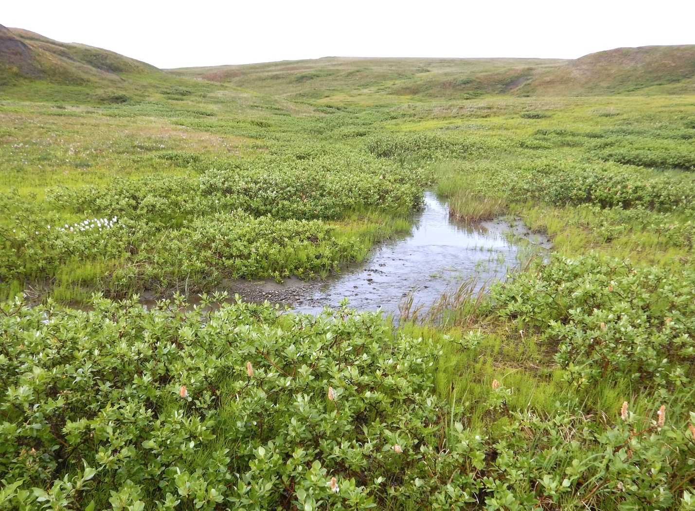
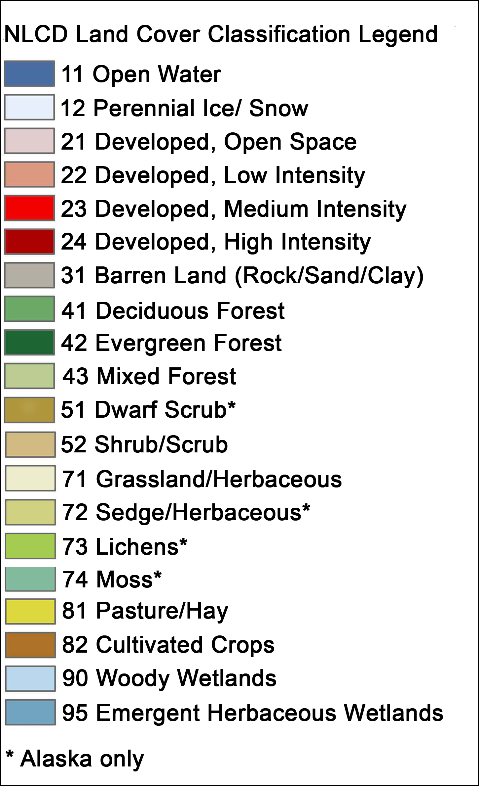
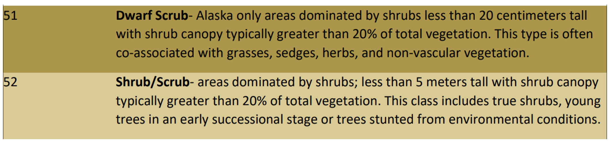
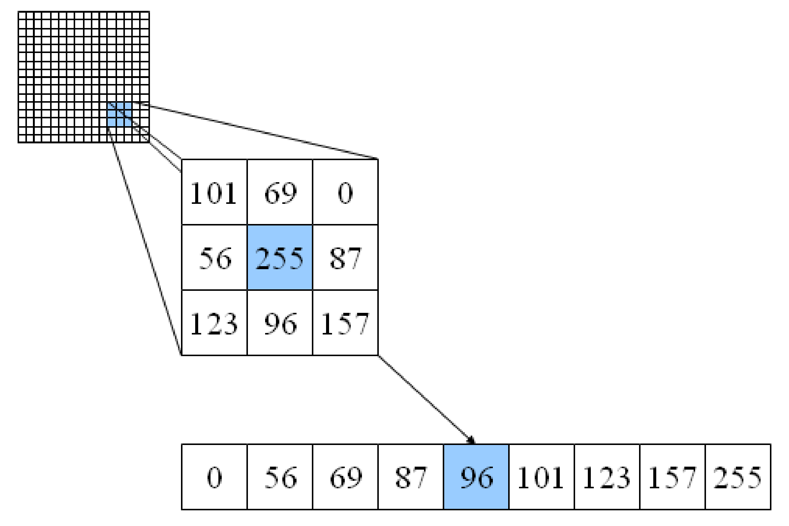

Gridded data analysis#
In this demo, we will be investigating the extent of shrubification in Alaska using the National Land Cover Database (NLCD). “Shrubification” describes the expansion of shrubs across the Arctic. Shrubs are woody plants with diverse growth forms but are often the tallest plants occupying tundra ecosystems and can form dense thickets with closed canopies in suitable habitats.
Studies indicate that warming temperatures, changes in snow cover, altered disturbance regimes (due to permafrost thaw, tundra fires, anthropogenic activities or changes in herbivory intensity) are all contributing to general increases in shrub abundance which will have wide-ranging consequences for the ecosystems and climate of the region (e.g. soil, permafrost, caribou).
{kind=link}
National Land Cover Database#
The National Land Cover Database (NLCD) provides gridded land cover at a 30 m resolution with a 20-class legend (in Alaska) based on a modified Anderson Level II classification system.
The database is designed to provide cyclical updates of United States land cover every 2-3 years since 2001.
Enables systematic documententation of land cover change for monitoring and trend assessments.
{kind=link}
Gridded data#
Gridded (or raster) data represent a matrix of cells (or pixels) organized into rows and columns (or a grid). Grid cells can represent data that changes continuously across a landscape (surface) such as elevation, air temperature, or reflectance data from satellite imaging platforms. Grid cells can also represent discrete data such as vegetation type or land cover.

Libraries#
The main library for accessing and analyzing gridded data in Python is called rasterio which builds on the popular Geographic Raster Abstraction Library or GDAL. It supports read/write access for over 160 gridded data formats (e.g. GeoTIFF, NetCDF4) and includes methods for finding dataset information, reprojecting, resampling, format conversion, and mosaicking.
{kind=link}
Let’s get started…
# Import libraries
import numpy as np
import rasterio
import pandas as pd
import matplotlib.pyplot as plt
Open dataset#
The data is formatted as a GeoTIFF (.tif) file which is one of the many formats that can be read by rasterio. We can open the dataset using the function open() which accepts a path string and returns a dataset object.
Note
The data for this demo can be accessed here.
src = rasterio.open('data/nlcd_2016_ak.tif')
src
<open DatasetReader name='data/nlcd_2016_ak.tif' mode='r'>
Dataset attributes#
The dataset object contains a number of attributes which can be explored using the following methods. Remember that a raster band is an array of values representing a single variable in 2D space. All bands of a dataset have the same number of rows and columns.
print(f"Number of bands: {src.count}")
print(f"Width: {src.width}")
print(f"Height: {src.height}")
print(f"Data type: {src.dtypes}")
Number of bands: 1
Width: 3991
Height: 2868
Data type: ('uint8',)
Georeferencing#
Like vector data, pixels in raster data can be mapped to regions on the Earth’s surface. Like GeoPandas, we can display the coordinate reference system of our data using the crs method.
src.crs
CRS.from_wkt('PROJCS["WGS_1984_Albers",GEOGCS["WGS 84",DATUM["WGS_1984",SPHEROID["WGS 84",6378137,298.257223563,AUTHORITY["EPSG","7030"]],AUTHORITY["EPSG","6326"]],PRIMEM["Greenwich",0],UNIT["degree",0.0174532925199433,AUTHORITY["EPSG","9122"]],AUTHORITY["EPSG","4326"]],PROJECTION["Albers_Conic_Equal_Area"],PARAMETER["latitude_of_center",50],PARAMETER["longitude_of_center",-154],PARAMETER["standard_parallel_1",55],PARAMETER["standard_parallel_2",65],PARAMETER["false_easting",0],PARAMETER["false_northing",0],UNIT["metre",1,AUTHORITY["EPSG","9001"]],AXIS["Easting",EAST],AXIS["Northing",NORTH]]')
The output from this function can be a little overwelming but there is some useful information contained here. For example it looks like the data are projected using an Albers projection system and the units are in meters.
We can display some more specific information about a dataset’s projection using the transform method. This function returns the spatial resolution of the dataset (i.e. the dimensions that each pixel of our dataset represents on the ground) and the coordinates of the top left corner.
src.transform
Affine(30.000052000454264, 0.0, -351410.251360936,
0.0, -29.996428936149588, 1939259.112990518)
Alternatively, we can display the bounding box of our dataset using the bounds() method.
src.bounds
BoundingBox(left=-351410.251360936, bottom=1853229.354801641, right=-231680.043827123, top=1939259.112990518)
Reading raster data#
Now that we have some basic information, we can go ahead and import our data as a NumPy N-D array using the read() function. Data from each band can be accessed by an index number.
Note
Note that bands are indexed from 1 due to a GDAL convention.
nlcd_2016 = src.read(1)
nlcd_2016
array([[42, 42, 42, ..., 52, 52, 41],
[42, 42, 42, ..., 52, 52, 41],
[42, 42, 42, ..., 41, 41, 52],
...,
[11, 11, 11, ..., 90, 11, 90],
[11, 11, 11, ..., 90, 90, 90],
[11, 11, 31, ..., 52, 52, 90]], shape=(2868, 3991), dtype=uint8)
type(nlcd_2016)
numpy.ndarray
Plot data#
We can have a look at the data using matplotlib. Since the dataset is so big (eight billion pixels!), we will just plot a subset of the data.
fig, ax = plt.subplots(figsize=(12,6))
im = ax.imshow(nlcd_2016, cmap='tab20b')
ax.set_title("Alaska land cover in 2016", fontsize=12)
Text(0.5, 1.0, 'Alaska land cover in 2016')
Single land cover type#
It would be useful to identify what some of these colors mean. To do this we can use matrix indexing to find the value of a pixel at a given location (i.e. array[row, column]). In this case we find the land cover at y (or row) = 500 and x (or column) = 3000.
nlcd_2016[500, 3000]
np.uint8(52)
The land cover type is 52 meaning shrub/scrub.
{kind=link}
fig, ax = plt.subplots(figsize=(12,6))
im = ax.imshow(nlcd_2016, cmap='tab20b')
ax.scatter(3000, 500, s=100, color='k')
ax.set_title("Alaska land cover in 2016", fontsize=12)
Text(0.5, 1.0, 'Alaska land cover in 2016')
Frequency of land cover type#
Clearly shrubs (class 52) cover a large portion the land cover in this region of Alaska. To quantify how much area they cover, it would be useful to count the occurrence of each land cover class. We can do that using NumPy’s unique() function, making sure we set return_counts to True.
unique, counts = np.unique(nlcd_2016, return_counts=True)
dict(zip(unique, counts))
{np.uint8(11): np.int64(2378247),
np.uint8(12): np.int64(35),
np.uint8(22): np.int64(2445),
np.uint8(23): np.int64(87),
np.uint8(31): np.int64(59650),
np.uint8(41): np.int64(59832),
np.uint8(42): np.int64(1456210),
np.uint8(43): np.int64(146517),
np.uint8(51): np.int64(2517179),
np.uint8(52): np.int64(1936912),
np.uint8(71): np.int64(3609),
np.uint8(72): np.int64(1007993),
np.uint8(90): np.int64(1161732),
np.uint8(95): np.int64(715740)}
# Count number of land pixels
land_pixels = nlcd_2016.size
# Convert to DataFrame
df_2016 = pd.DataFrame(list(zip(unique, counts, (counts/land_pixels)*100)),
columns=['lc', 'count_2016', 'fraction_2016'])
df_2016
| lc | count_2016 | fraction_2016 | |
|---|---|---|---|
| 0 | 11 | 2378247 | 20.777634 |
| 1 | 12 | 35 | 0.000306 |
| 2 | 22 | 2445 | 0.021361 |
| 3 | 23 | 87 | 0.000760 |
| 4 | 31 | 59650 | 0.521134 |
| 5 | 41 | 59832 | 0.522724 |
| 6 | 42 | 1456210 | 12.722227 |
| 7 | 43 | 146517 | 1.280051 |
| 8 | 51 | 2517179 | 21.991418 |
| 9 | 52 | 1936912 | 16.921896 |
| 10 | 71 | 3609 | 0.031530 |
| 11 | 72 | 1007993 | 8.806364 |
| 12 | 90 | 1161732 | 10.149510 |
| 13 | 95 | 715740 | 6.253086 |
This is very useful. With reference to the NLCD land cover classes, our table shows that the most dominant type of land cover is dwarf shrub (51) at 22% althoug normal shrubs (52) are not far behind with 17%. We also have some evergreen forest (42) at 13% and woody wetlands (90) at 10%.
Aggregate land cover classes#
Since we are interested in all kinds of shrubs, we will combine the the dwarf shrubs and shrub/scrub classes. The most simple way of doing this is to re-assign all grid cells classified as shrub/scrub (52) to dwarf shrubs (51) using a mask.
# Re-assign land cover class
nlcd_2016[nlcd_2016 == 52] = 51
# Check there are no more grid cells classified as normal shrubs
unique, counts = np.unique(nlcd_2016, return_counts=True)
# Convert to DataFrame
df_2016 = pd.DataFrame(list(zip(unique, counts, (counts/land_pixels)*100)),
columns=['lc', 'count_2016', 'fraction_2016'])
df_2016
| lc | count_2016 | fraction_2016 | |
|---|---|---|---|
| 0 | 11 | 2378247 | 20.777634 |
| 1 | 12 | 35 | 0.000306 |
| 2 | 22 | 2445 | 0.021361 |
| 3 | 23 | 87 | 0.000760 |
| 4 | 31 | 59650 | 0.521134 |
| 5 | 41 | 59832 | 0.522724 |
| 6 | 42 | 1456210 | 12.722227 |
| 7 | 43 | 146517 | 1.280051 |
| 8 | 51 | 4454091 | 38.913313 |
| 9 | 71 | 3609 | 0.031530 |
| 10 | 72 | 1007993 | 8.806364 |
| 11 | 90 | 1161732 | 10.149510 |
| 12 | 95 | 715740 | 6.253086 |
Land cover change#
The big question here is have these shrubs always occupied a large portion of this region of Alaska? To answer that we could perform the same analysis on a previous NLCD dataset from 2001.
# Open
src_2001 = rasterio.open('data/nlcd_2001_ak.tif')
# Read
nlcd_2001 = src_2001.read(1)
# Re-assign land cover class
nlcd_2001[nlcd_2001 == 52] = 51
# Count occurrence in each class
unique, counts = np.unique(nlcd_2001, return_counts=True)
# Convert to DataFrame
df_2001 = pd.DataFrame(list(zip(unique, counts, (counts/land_pixels)*100)),
columns=['lc', 'count_2001', 'fraction_2001'])
df_2001
| lc | count_2001 | fraction_2001 | |
|---|---|---|---|
| 0 | 11 | 2375777 | 20.756054 |
| 1 | 12 | 24 | 0.000210 |
| 2 | 22 | 2436 | 0.021282 |
| 3 | 23 | 91 | 0.000795 |
| 4 | 31 | 58014 | 0.506841 |
| 5 | 41 | 57582 | 0.503067 |
| 6 | 42 | 1461918 | 12.772095 |
| 7 | 43 | 144954 | 1.266395 |
| 8 | 51 | 4454788 | 38.919403 |
| 9 | 72 | 1009936 | 8.823339 |
| 10 | 90 | 1162063 | 10.152402 |
| 11 | 95 | 718605 | 6.278116 |
Combining the DataFrames should allow us to compute the difference between 2001 and 2016
df = pd.merge(df_2001, df_2016, on=['lc'])
df
| lc | count_2001 | fraction_2001 | count_2016 | fraction_2016 | |
|---|---|---|---|---|---|
| 0 | 11 | 2375777 | 20.756054 | 2378247 | 20.777634 |
| 1 | 12 | 24 | 0.000210 | 35 | 0.000306 |
| 2 | 22 | 2436 | 0.021282 | 2445 | 0.021361 |
| 3 | 23 | 91 | 0.000795 | 87 | 0.000760 |
| 4 | 31 | 58014 | 0.506841 | 59650 | 0.521134 |
| 5 | 41 | 57582 | 0.503067 | 59832 | 0.522724 |
| 6 | 42 | 1461918 | 12.772095 | 1456210 | 12.722227 |
| 7 | 43 | 144954 | 1.266395 | 146517 | 1.280051 |
| 8 | 51 | 4454788 | 38.919403 | 4454091 | 38.913313 |
| 9 | 72 | 1009936 | 8.823339 | 1007993 | 8.806364 |
| 10 | 90 | 1162063 | 10.152402 | 1161732 | 10.149510 |
| 11 | 95 | 718605 | 6.278116 | 715740 | 6.253086 |
df['change'] = (df['count_2016'] - df['count_2001'])
df['change_percent'] = (((df['count_2016'] - df['count_2001']) / df['count_2001']) * 100)
df
| lc | count_2001 | fraction_2001 | count_2016 | fraction_2016 | change | change_percent | |
|---|---|---|---|---|---|---|---|
| 0 | 11 | 2375777 | 20.756054 | 2378247 | 20.777634 | 2470 | 0.103966 |
| 1 | 12 | 24 | 0.000210 | 35 | 0.000306 | 11 | 45.833333 |
| 2 | 22 | 2436 | 0.021282 | 2445 | 0.021361 | 9 | 0.369458 |
| 3 | 23 | 91 | 0.000795 | 87 | 0.000760 | -4 | -4.395604 |
| 4 | 31 | 58014 | 0.506841 | 59650 | 0.521134 | 1636 | 2.820009 |
| 5 | 41 | 57582 | 0.503067 | 59832 | 0.522724 | 2250 | 3.907471 |
| 6 | 42 | 1461918 | 12.772095 | 1456210 | 12.722227 | -5708 | -0.390446 |
| 7 | 43 | 144954 | 1.266395 | 146517 | 1.280051 | 1563 | 1.078273 |
| 8 | 51 | 4454788 | 38.919403 | 4454091 | 38.913313 | -697 | -0.015646 |
| 9 | 72 | 1009936 | 8.823339 | 1007993 | 8.806364 | -1943 | -0.192388 |
| 10 | 90 | 1162063 | 10.152402 | 1161732 | 10.149510 | -331 | -0.028484 |
| 11 | 95 | 718605 | 6.278116 | 715740 | 6.253086 | -2865 | -0.398689 |
Shrubification?#
Oh dear - the extent of shrubs did not increase between 2001 and 2016. One takeaway from this could be that shrubification is not happening in this region of the Arctic. But the percentage change in shrubs was very small (-0.02%), well below what we would expect the uncertainty to be in our land cover product.
Other, perhaps more significant changes, that occurred between 2001 and 2016 include an increase in deciduous forest (41) by 3.9%, a decrease in evergreen forest (42) by 0.4%, and a decrease in emergent herbaceous wetlands (95) by 0.4%.
Direction of land cover change#
It would be interesting to know how grid cells changed between 2001 and 2016. We can do this by masking the 2016 land cover data with specific grid cells from the 2001 land cover data. For example, in the code below we identify grid cells in 2016 that were classified as evergreen forest (class 42) in 2001. We then compute what land cover they are by masking the 2016 land cover data and using the unique() function.
mask = nlcd_2016[nlcd_2001 == 42]
unique, counts = np.unique(mask, return_counts=True)
forestchange_df = pd.DataFrame(list(zip(unique, counts, (counts/mask.shape[0])*100)),
columns=['lc', 'count', 'fraction'])
forestchange_df
| lc | count | fraction | |
|---|---|---|---|
| 0 | 11 | 308 | 0.021068 |
| 1 | 42 | 1455641 | 99.570633 |
| 2 | 51 | 4273 | 0.292287 |
| 3 | 71 | 1672 | 0.114370 |
| 4 | 95 | 24 | 0.001642 |
It looks like most of the evergreen forest (99.6%) did not change between 2001 and 2016. When it did, it was most likely to change to shrub (51). Let’s finish this section by plotting a map showing where evergreen forest was replaced by shrub.
forest2shrub = (nlcd_2001 == 42) & ((nlcd_2016 == 51))
fig, ax = plt.subplots(figsize=(8,8))
im = ax.imshow(forest2shrub.astype(int), cmap='Blues')
ax.set_title("Forest to shrubs in Alaska between 2001 and 2016", fontsize=12)
Text(0.5, 1.0, 'Forest to shrubs in Alaska between 2001 and 2016')
At this scale, it’s difficult to see what’s going on. Let’s zoom in a little…
fig, ax = plt.subplots(figsize=(8,8))
im2 = ax.imshow(forest2shrub.astype(int)[1000:1750,2750:3750], cmap='Blues')
ax.set_title("Forest to shrubs in Alaska between 2001 and 2016", fontsize=12)
Text(0.5, 1.0, 'Forest to shrubs in Alaska between 2001 and 2016')
Neigborhood operations#
So far, we have focused on local operations, treating individual grid cells as independent observations that are not influenced by each other. In reality, the land cover of a given grid cell is likely to be similar to adjacent grid cells, than distance grid cells.
Tobler’s First Law of Geography is a fundamental principle of spatial analysis that says,
Everything is related to everything else, but near things are more related than distant things
We can exploit this concept using neigborhood operations. For example, let’s say our land cover dataset contained missing values or outliers. We could easily identify (and replace) these values by comparing them against the values of surrounding grid cells. A median filter is a common approach for outlier filtering.
{kind=link}
The scipy.ndimage package provides many functions for applying these neighborhood operations. We define window size (also termed kernel) using the size parameter and the function automatically slides (or convolves) this window across our entire grid.
{kind=link}
Note
We chose a large window size to demonstrate the median_filter output - size=15 would be 15 x 15 pixels or a 450 x 450 m window.
from scipy.ndimage import median_filter
# Apply 9x9 median filter
nlcd_2001_median = median_filter(nlcd_2001, size=15)
# Plot
fig, ax = plt.subplots(figsize=(12,6))
im = ax.imshow(nlcd_2001_median, cmap='tab20b')
The median filter reduces the difference between a grid cell and surrounding grid cells. These type of filters are therefore called low-pass filters.
Note
We could use any window size or shape. Likewise, there is almost no limit to the different operations we could apply to grid cell values in our window.
A 3×3 Gaussian kernel with sigma=1 provides a weighted mean of neigboring values and can be defined as:
In contrast, a high-pass filter emphasizes differences between a grid cell and its neighbors. The classic one is a Laplacian filter:
And NumPy and SciPy make the linear algebra straightforward.
Since our land cover classes are not continuous values, it doesn’t make sense to apply a Gaussian and Laplacian filter to our data. But we would implement it using generic_filter that applies a specific function to each element.
# Define a 3x3 Gaussian kernel (σ=1)
gaussian_kernel = np.array([
[1, 2, 1],
[2, 4, 2],
[1, 2, 1]
], dtype=float)
# Normalize
gaussian_kernel = gaussian_kernel / gaussian_kernel.sum()
# Define function for generic_filter
def gaussian_filter_func(window):
window = window.reshape((3, 3))
return np.sum(window * gaussian_kernel)
# Apply filter
smoothed = ndimage.generic_filter(image, function=gaussian_filter_func, size=3)
Let’s demonstrate one more time, this time using a custom diversity index that simply counts the number of unique land covers in each 15 x 15 window.
from scipy.ndimage import generic_filter
def diversity_metric(window):
values = window.astype(int)
unique = np.unique(values[values > 0])
return len(unique)
div_map = generic_filter(nlcd_2001, diversity_metric, size=15)
Exception ignored in: <bound method IPythonKernel._clean_thread_parent_frames of <ipykernel.ipkernel.IPythonKernel object at 0x105fe8680>>
Traceback (most recent call last):
File "/opt/miniconda3/envs/book/lib/python3.12/site-packages/ipykernel/ipkernel.py", line 790, in _clean_thread_parent_frames
active_threads = {thread.ident for thread in threading.enumerate()}
^^^^^^^^^^^^^^^^^^^^^
File "/opt/miniconda3/envs/book/lib/python3.12/threading.py", line 1543, in enumerate
with _active_limbo_lock:
^^^^^^^^^^^^^^^^^^
SystemError: <built-in method __enter__ of _thread.RLock object at 0x1039967c0> returned a result with an exception set
# Plot
fig, ax = plt.subplots(figsize=(12,6))
im = ax.imshow(div_map)